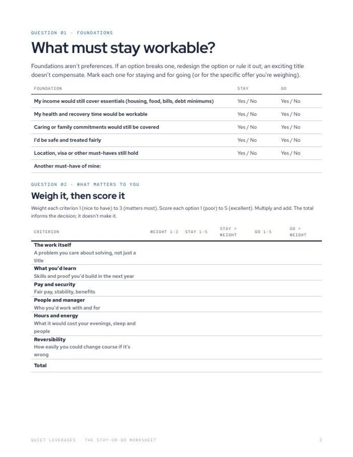
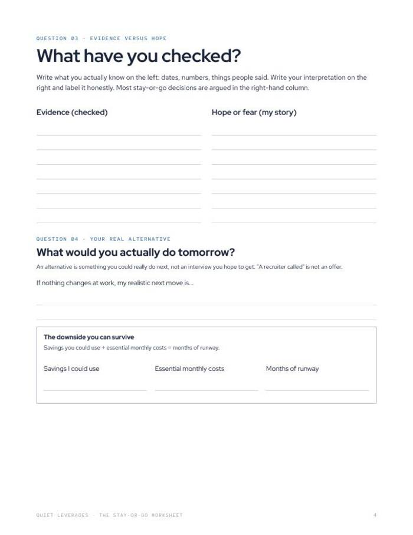
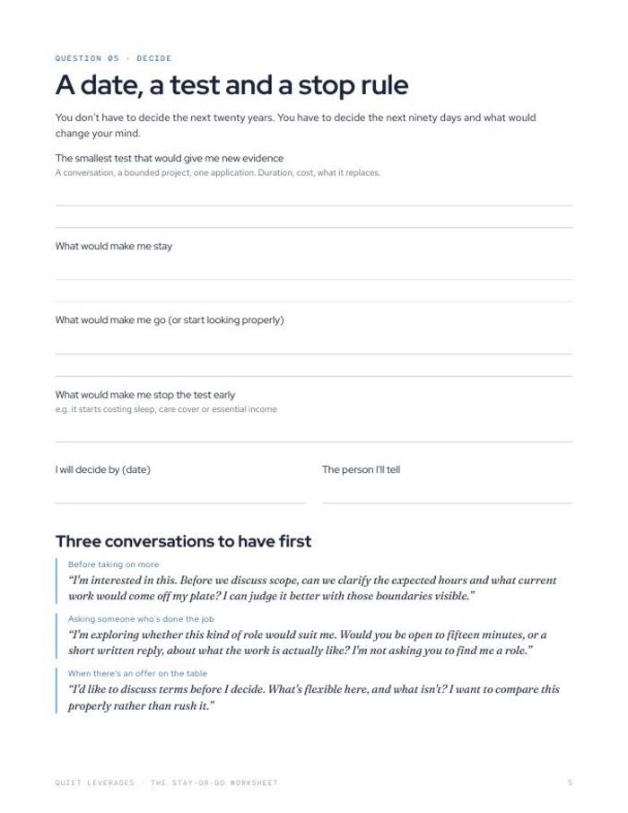

Should you quit your job? Decide on paper, not at 2 a.m.
Compare staying with going, separate what you have checked from what you hope, and set a date to decide.
PDF + Google Sheet. No course, no email wall. Fill it in when things are calm.

Evidence on one side, hope on the other
Write what you actually know in one column and your interpretation in the other. The page shows which one is doing the arguing.
Six criteria, scored both ways
Score staying and going on the same six criteria, so the total informs the decision instead of the mood.
A date to decide
You finish with a decision date, a small test and a stop rule, not an open-ended debate.
criteria scored for stay and go
decision date set
formats: PDF and Google Sheet
of workers say they stay in their job out of fear and economic uncertainty. Staying is a fine choice when you have checked what must hold and set a date to look again.
Monster, Oct 2025What you leave with
Foundations checked first
Income that covers essentials, recovery time, caring commitments, fair treatment, location. Mark each one for staying and for going.
A fair comparison
Six criteria, each weighted and scored for stay and for go. The total informs the decision. It does not make it.
Your real alternative, named
An alternative is something you could do tomorrow, not an interview you hope to get. The page asks for the first kind.
Ninety days, not twenty years
You decide the next ninety days and what would change your mind, which is a decision you can revise.
A worksheet and a sheet that does the scoring
Use paper if you think better with a pen. Use the Google Sheet if you want the scoring done for you.
- Printable worksheet (PDF). The foundations that must hold, six criteria scored for stay and go, and a decision date.
- Google Sheet version. Does the scoring.
- Three conversations to have first. Opening lines to try before you decide.
- Built from The Career Playbook by Quiet Leverages.



Five questions, one afternoon
Check and score
Mark the foundations for staying and going, then score six criteria for each.
Separate evidence from hope
Write what you have checked on the left and your story about it on the right.
Set a date, a test and a stop rule
Pick the smallest test that would give you new evidence, and the day you will decide.
A good fit if the answer changes by the hour
Use this if
- You ask yourself whether to quit most Sundays and never get to an answer.
- A bad week has you wondering whether it is the job or the week.
- You would rather decide from a page you filled in when calm.
Skip it if
- You want someone to tell you what to do. The call is yours; this only organises it.
- You need legal advice about a contract or an exit. This is general education.
- You have decided to stay and want more pay. See The Raise Kit.
Why this decision stalls, in numbers
call themselves job huggers.
ResumeBuilder, Feb 2026comments on the median stay-or-leave career post, against about 415 for career posts overall.
Quiet Leverages analysis of Reddit top posts, Oct 2025-Sep 2026median from starting a job search to a first offer.
Huntr, Q1 2026What readers say about The Stay-or-Go Worksheet
Decide on paper this week
It is free. Fill it in when you are calm, not after a bad meeting.
- Printable worksheet (PDF)
- Google Sheet that does the scoring
- Three conversations to have first
Before you decide
Is it really free?
Yes. Gumroad lets you pay what you want, starting at $0. If it helps and you want to leave something, you can. You do not have to.
How long does it take?
About twenty minutes for a first pass. Do it when you are calm, not after a bad meeting, and come back to it before your decision date.
Will it tell me whether to quit?
No. It organises what you know so you can see it. The total informs the decision; you make it.
Do I need Google Sheets?
No. The printable PDF covers all five questions. The sheet only does the scoring arithmetic for you.
Can I print it or use it on a tablet?
Both. Print the PDF and use a pen, or fill it in on a tablet with any PDF app.
Is this employment or legal advice?
No. It is a planning worksheet. General education only.


Twenty minutes, one page, one date.
Settle the question on paper, then give it ninety days.
Get the free worksheetFree on Gumroad. Pay what you want from $0. Instant download.